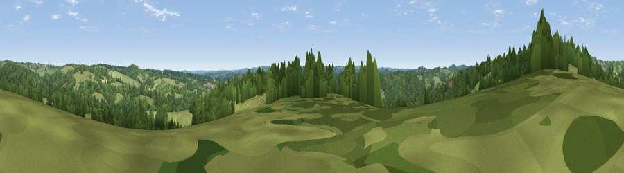

Viewpoint near Wadhurst
#37066 in England · top 41% of its area beats it · near WadhurstWhere it is
The exact computed spot (TQ 62925 29175). Click the marker for map links.
The view, rendered

A 360° render of this exact spot computed from the terrain model, tree cover and land cover — summer colours, afternoon light, calibrated against photographs of famous viewpoints. Real trees, hedges and buildings will differ in detail.
The panorama
Grey silhouette: terrain skyline in each direction (720 bearings, Earth curvature and refraction included). Dashed green: skyline with trees (+15 m) and buildings (+8 m) as obstacles. Blue strip: how far the ground is visible on each bearing.
Where the view opens
Wedge length = distance to the farthest visible ground on that bearing (vegetation-aware). Rings at 10, 25 and 50 km.
What fills the view
49% woodland · 48% grassland · 2% cropland ·
Angular shares of the visible panorama (visual magnitude), not map area. Landscape diversity 0.35 (0–1 Shannon).
Key numbers
More beautiful places nearby
The staircase of upgrades: each row has a higher view potential than everything closer. Driving times are estimates from straight-line distance, calibrated against real road routing — check an actual route before setting out.
| Place | Direction | Drive | Score |
|---|---|---|---|
| Best Beech Hill | NNW · 3 km | ~6 min | 44.8 |
| Viewpoint near Burwash Common | S · 6 km | ~13 min | 51.0 |
| Viewpoint near Burwash Common | S · 6 km | ~13 min | 52.1 |
| Viewpoint near Argos Hill | W · 6 km | ~13 min | 53.0 |
| Viewpoint near Cade Street | SSW · 8 km | ~17 min | 56.7 |
| Brightling Obelisk [Brightling Down] | SSE · 9 km | ~18 min | 69.1 |
| Viewpoint near Three Oaks | SE · 26 km | ~41 min | 69.3 |
| Viewpoint near Glynde | SW · 26 km | ~42 min | 70.8 |
51.03884, 0.32250 · source: screening · position refined by local search. Computed location — check access rights before visiting.